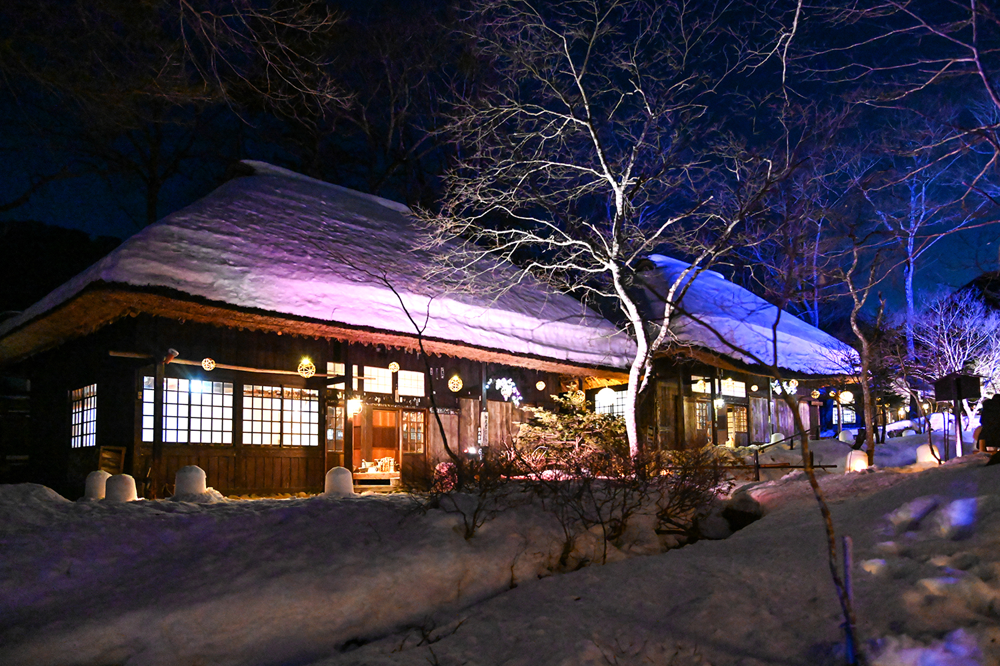
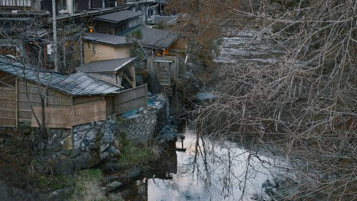
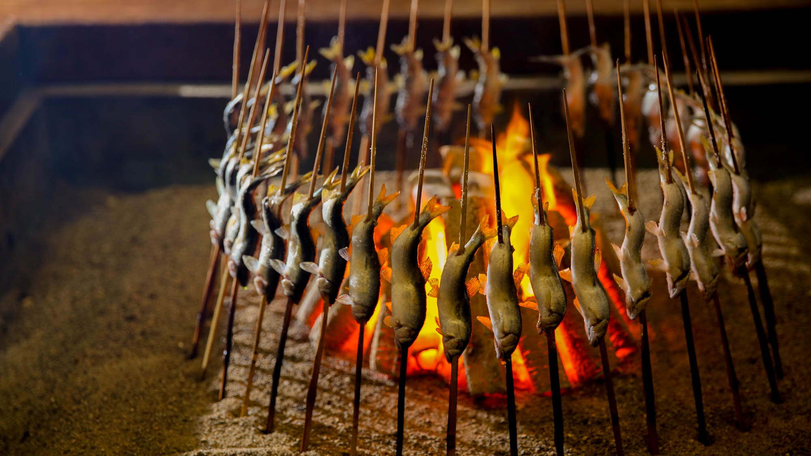
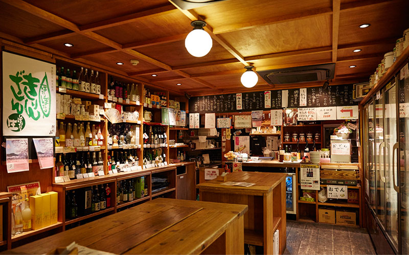
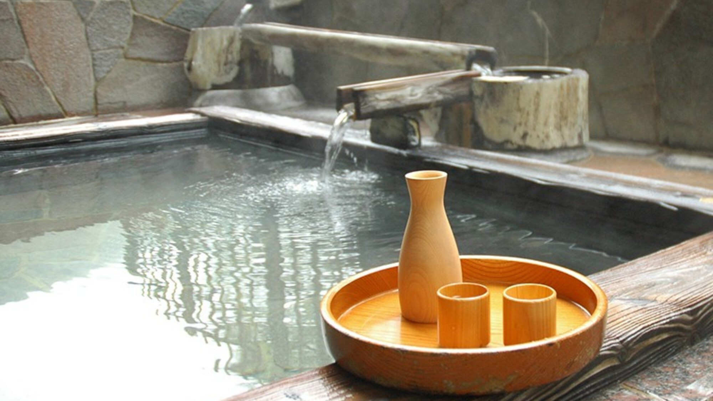
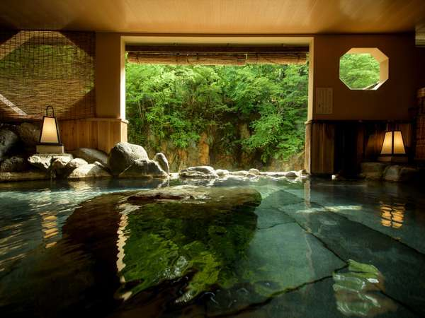
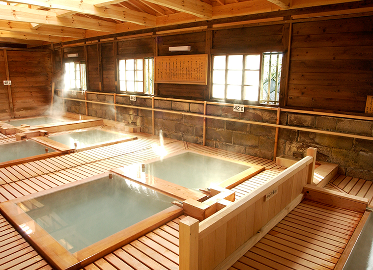
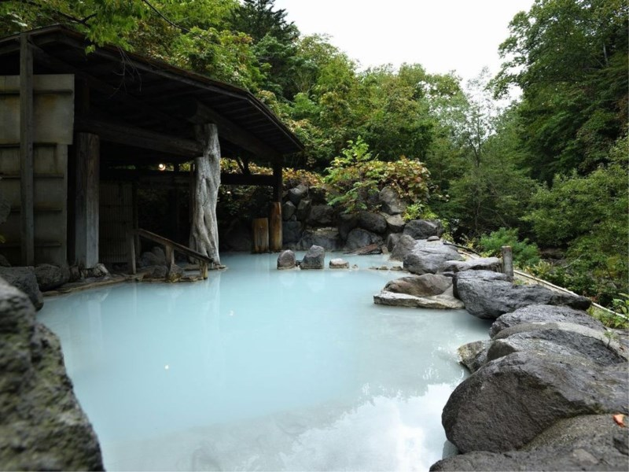

Copy is a first draft for voice. Eight image slots, each named and captioned with what it needs to show. Same rule as the prefecture page: drop correctly-named files into images/ and they appear.

art-yunishigawa-cover.jpgYunishigawa is two hours north of Nikko, up a valley, and it's hard to reach on purpose. The Heike lost the war at Dan-no-Ura in 1185 and the survivors walked north until they found somewhere nobody would think to look. Some of them stopped here and never left.
About a thousand people live here now. There are more open-air baths in the valley than there are houses, one street running through the middle of it, and a single liquor shop that shuts at seven.
Tobu Liberty from Asakusa to Yunishigawa-Onsen station, about two hours and forty minutes. Then the Nikko Kotsu bus another twenty-five minutes up the valley. Get off at Heike-no-Sho-mae.
There are only a handful of buses a day, so check the times before you book the train rather than after.
Nobody quite agrees how old the spring is. The inn that owns it says eight hundred years, the tourist board usually says 1573, and either way people have been getting into this water for a very long time.
What everyone does agree on is why the village is where it is. It was chosen because nobody would find it, and some of the old local rules come straight out of that — no carp banners in May, no roosters kept. Nothing that flies a flag or makes a noise at dawn.

art-yunishigawa-valley.jpgBankyū was founded in 1666 and has been run by the same family ever since, direct descendants of the Heike who settled the valley. They own Fujikura-no-yu, the spring the whole village grew out of. Somebody bangs a drum when you arrive, which is either charming or alarming depending on how long the journey was.
Dinner is in a separate building on the other side of the river, and you cross a vine bridge to get to it. It's cooked in front of you over charcoal on a sunken hearth — fish, mountain vegetables, whatever's around. The bridge itself was built by craftsmen from Iya in Shikoku, which is the other place the Heike hid after the war.
Every room faces the river. The suite they renovated in 2025 is 80m² with its own half-open bath, and there's a larger room with a full private bath that they only let out twice a day. Book one of those if you can — you'll want a private tub for the next part.

art-bankyu-irori.jpgYuzawaya is a liquor shop on the main street, opposite the free car park. What makes it worth finding is the counter along one side, about ten seats, where you can taste what's on the shelves before you decide what to take home.
It's a shop rather than a bar, and nobody's making cocktails. You point at a bottle, they open it, and you sit down and drink it. If you like it, you buy one on the way out.
The shelves are the reason to come. Most of it is Tochigi, a lot of it is Nikko, and a few bottles are made for this village and sold nowhere else. In a place this small that isn't a marketing idea — it's just what the local brewery sends up the mountain.

art-yuzawaya-counter.jpgThe thing to try is their amazake. Amazake is rice fermented with koji — thick, sweet, no alcohol, sold hot in winter all over Japan. Theirs is made with soy milk instead of water, and the soy milk comes from Heike Yuba, who make yuba a few doors up the same street.
Yuba is the skin that forms on soy milk when you heat it. Someone lifts it off by hand, and does it again, and again. Nikko has made it for centuries because the mountain temples ate no meat and needed the protein, and Nikko yuba is rolled thicker than the Kyoto version — closer to a food than a garnish.
So you're drinking something made out of what the neighbours make, with water from the mountain you've just been sitting in. That's why it's worth buying here rather than ordering something similar at home.
What else to order
The easiest way to warm sake in a hot spring town is to put the bottle in the water. Sealed, standing upright in the tub, while you sit in there with it. No pan, no stove, and definitely no microwave.
This only works in a private bath — a room with its own tub, or one you've booked for an hour. Never a shared bath. Glass in a communal tub is a genuine hazard, and a drink doesn't belong in there anyway.
Most of these baths run somewhere between 42 and 45 degrees, which lands the sake around 40. That's nurukan, and it's where a lot of junmai is at its best.

art-bottle-in-bath.jpgYou do not need a thermometer. Cold sake gives off almost nothing. As it warms, the smell of the rice starts coming up out of the bottle — soft, a bit like steamed rice, sometimes closer to cream or nuts. When you can smell it without leaning in, it's ready. If it turns sharp or spirity you've gone too far.
Kimoto and yamahai take heat best, and Sōhomare is the one to practise on — Yuzawaya has it on the shelf. Big fruity daiginjo mostly doesn't improve, so don't waste one finding out.
Bath etiquette, briefly
Wash and rinse yourself completely before getting in. The tub is for soaking, not for cleaning.
The small towel stays out of the water — most people fold it and rest it on their head. Tie long hair up.
Don't get in drunk, and drink water between soaks. Hot water and alcohol dehydrate you fast and the dizziness comes on quicker than you'd think. One drink in the bath, not four.
If you've come this far you may as well keep going. These three are each worth a night, and they're nothing like each other.

art-next-shiobara.jpg
art-next-nasu.jpg
art-next-tbc.jpgart-yunishigawa-cover.jpg — top of the article, 390 × 230. Street at dusk or the bridge lit.art-yunishigawa-valley.jpg — after the village section. Job: show scale. Houses against the slope.art-bankyu-irori.jpg — after the inn section. The fire and the food, not the building exterior.art-yuzawaya-counter.jpg — after the shop intro, before the order list. Must read as shop first.art-bottle-in-bath.jpg — the method shot, immediately after the instruction. This is the one people screenshot, so it should be the best photo in the piece.art-next-shiobara.jpg, art-next-nasu.jpg, art-next-tbc.jpg — thumbnails, 74 × 58.Eight slots. One per section, plus the cover. Any more and the piece turns into a gallery.